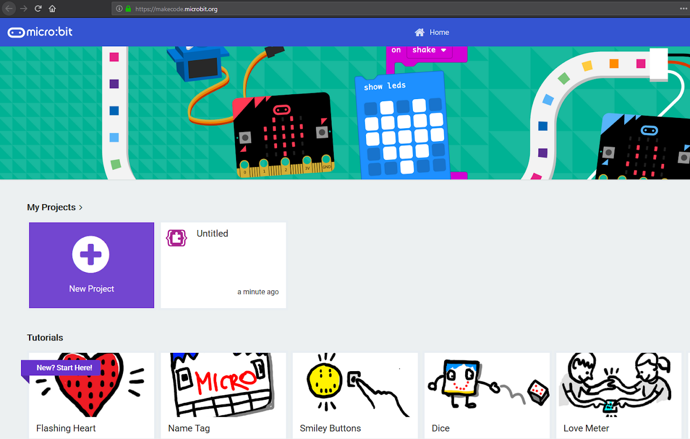
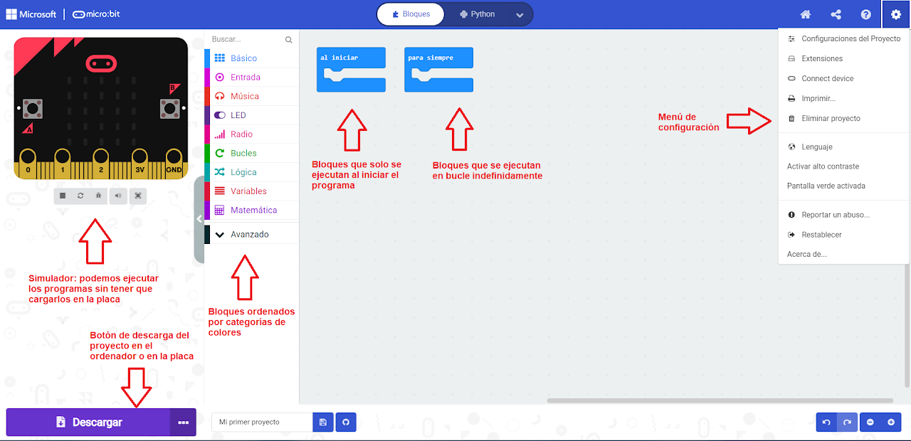

Para programar nuestra placa lo haremos mediante la página de Makecode, de la empresa Microsoft.
Se programa desde un navegador de Internet, conectando la placa al ordenador mediante un cable USB.

En la siguiente imagen podemos ver las partes principales de la página de Makecode:
